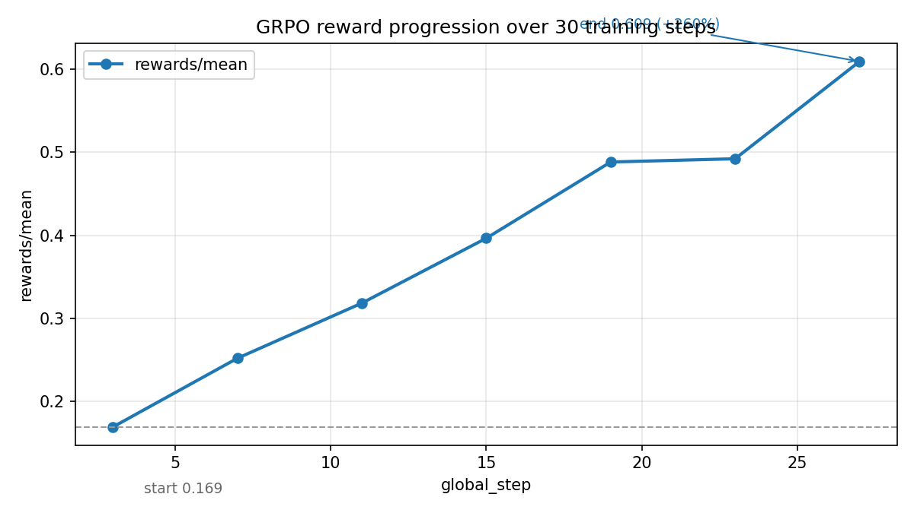
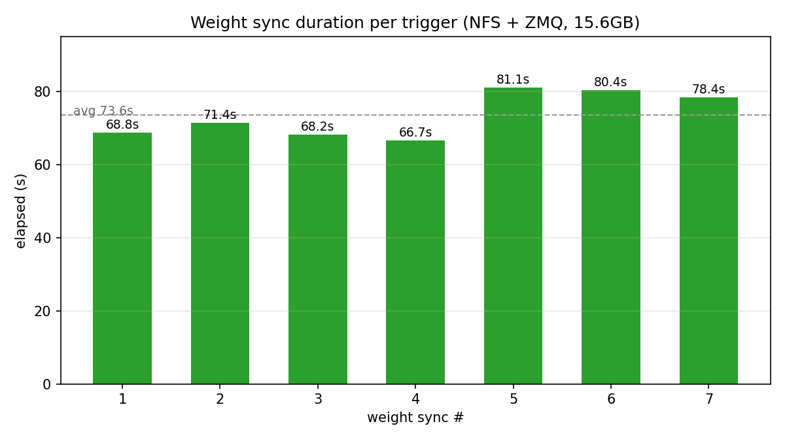
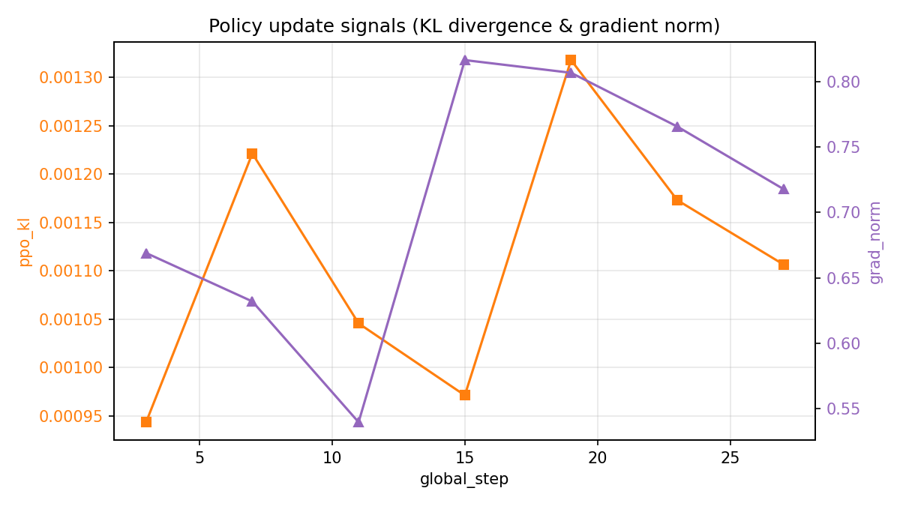

关键指标
概述
verl GRPO 训练拆为物理隔离双集群（TRAIN
结果总览
Reward 上升（核心结果）
reward 从 0.169 单调上升到 0.609（+260%）——每 4 步（一个权重同步周期）上升约 +25~50%。这是真实闭环的信号：trainer 新策略 → 权重同步到推理侧 → 新样本 → reward 反映新策略。

权重同步稳定
7 次权重同步全部成功，66.7-81.1s/次（均值 73.4s）——每次同步 15.6GB（NFS 写 + NFS 读 + ZMQ 传输），耗时稳定无恶化。

策略更新信号
ppo_kl 稳定在 ~0.001（策略持续远离初始，无发散）；grad_norm 0.54-0.82 正常波动。

完整数据表（30 步，7 个 metric 点）
| step | global_step | rewards/mean | ppo_kl | grad_norm | 权重同步 |
|---|---|---|---|---|---|
| 1 | 3 | 0.169 | 0.00094 | 0.669 | #1 ✅ 68.8s |
| 2 | 7 | 0.252 | 0.00122 | 0.632 | #2 ✅ 71.4s |
| 3 | 11 | 0.318 | 0.00105 | 0.540 | #3 ✅ 68.2s |
| 4 | 15 | 0.397 | 0.00097 | 0.816 | #4 ✅ 66.7s |
| 5 | 19 | 0.488 | 0.00132 | 0.807 | #5 ✅ 81.1s |
| 6 | 23 | 0.492 | 0.00117 | 0.766 | #6 ✅ 80.4s |
| 7 | 27 | 0.609 | 0.00111 | 0.718 | #7 ✅ 78.4s |
实验环境
拓扑（物理隔离双集群）
| 集群 | 节点 | 镜像 | 卡数 | 角色 |
|---|---|---|---|---|
| TRAIN | verl:9.1.0-beta.3-910b-vllm0.23.0-mindspeed-llm | 4 (NPU 0-3) | FSDP 训练 + coordinator | |
| INFER | kimi-k3:910b-cann9.1-vllm0.23-k3-final | 4 (NPU 0-3) | vLLM TP4 + rollouter |
模型/数据/参数
| 项 | 值 |
|---|---|
| 模型 | Qwen3-8B（15.6GB bf16） |
| 数据 | gsm8k_verl（7473 样本，含 reward_model.ground_truth 字段） |
| 算法 | GRPO（adv_estimator=grpo, use_kl_loss=False） |
| 训练 | train_batch=8, mini_batch=4, micro_batch=1, lr=1e-6 |
| 生成 | n=8, max_prompt_len=512, max_resp_len=1024 |
| 同步 | trigger_parameter_sync_step=4, require_batches=4 |
| 总步数 | TOTAL_STEPS=30 |
系统架构
三通道架构
┌──── TRAIN 集群 (node-195, verl 镜像) ────┐ ┌──── INFER 集群 (node-155, kimi-k3 镜像) ────┐
│ trainer (controller) │ │ rollouter (agent loop) │
│ ├─ actor worker ×4 (FSDP 分片) │ │ ├─ vLLM 引擎 (TP=4) │
│ ├─ NFS 写权重 (每 4 步) ←─ NFS 15.6GB ──┤ │ ├─ NFS 读权重 (coordinator 触发) │
│ ├─ TCP MQ client ←──── TCP 21001 ───────┤ │ ├─ TCP MQ server (样本) │
│ └─ coordinator client ←─ HTTP 22001 ────┤ │ └─ rollout_driver (HTTP 23001) │
└──────────────────────────────────────────┘ └──────────────────────────────────────────┘| 通道 | 技术 | 方向 | 端口 | 为什么 |
|---|---|---|---|---|
| 权重面 | NFS 文件同步（np.save bf16 + 原子 rename） | TRAIN→INFER（每 4 步） | 共享盘 | 官方 mooncake/kimi 跨节点隐式 HCCL（违反约束①） |
| 数据面 | TCP MessageQueue（cloudpickle + 背压） | INFER→TRAIN（样本流） | 21001 | Ray 对象存储不支持跨集群 |
| 控制面 | coordinator HTTP + rollout_driver | 双向（RPC + 注册） | 22001/23001 | 无跨集群 Ray 调用 |
权重同步完整链路
trainer (node-195) INFER 侧 (node-155)
│ 每 4 步触发 │
├─ actor 写 NFS (85s) ──→ step_N/ │
│ ├─ rollouter.update_weights (HTTP 触发)
│ │ ├─ CheckpointEngineWorker ×4 (并发 ONE_TO_ALL)
│ │ │ ├─ NFS 读 (50s)
│ │ │ └─ ZMQ send (ipc:// NPU-i.sock, CUDA IPC handle)
│ │ ├─ collective_rpc("update_weights_from_ipc")
│ │ │ └─ vLLM 4 TP worker 各加载分片
│ │ └─ 确认返回
├─ coordinator param_version++ → 确认 │
└─ reset_staleness → rollouter 恢复 │Rollouter 生成-暂停-恢复节奏（staleness 背压）
rollouter 生成 → staleness_samples++ → 达到 max_required_samples (70)
→ _should_pause_generation=True → 暂停, active_tasks 排空, 引擎空闲
→ trainer 权重同步 (引擎空闲, ZMQ 无竞争)
→ reset_staleness → 解除暂停, 恢复生成NPU-i.sock 并喂数据，collective_rpc 才能等齐 4 个 TP worker 完成——串行化会破坏此不变量导致死锁（见 §7）。
关键技术点
权重同步并发模型（ONE_TO_ALL + rank 门控）
原生 verl 用 Dispatch.ONE_TO_ALL 把 update_weights 广播到全部 worker 并发执行；只有 rank 0 发起 collective_rpc（rollout_rank != 0 门控），4 个 worker 各自 ZMQ 发送。这是正确性的核心——任何"优化"成串行都会死锁。
ZMQ IPC 本机传输（零拷贝）
权重传输不是网络传输：ipc:///tmp/rl-colocate-zmq-{device_uuid}.sock 是 Unix domain socket（本机进程间），sender 用 torch.multiprocessing.reductions.reduce_tensor 生成 CUDA IPC handle（小句柄），receiver 通过 handle 零拷贝读 sender 显存。跨集群的只有 NFS 权重文件。
Staleness 背压（生成节奏控制）
max_required_samples = required_samples × (staleness_threshold+1) × trigger_parameter_sync_step。rollouter 产到阈值暂停 → 引擎空闲 → 同步 → 恢复。两侧 required_samples 必须对齐（双入口 launch 曾只给 trainer 传参，导致 rollouter 永不暂停）。
字节序协议规范
MQ 帧协议 struct.pack("!i")（network 序）与 unpack("!i") 必须一致——曾因 server 用 native 小端、client 读大端，队列大小 6 被读成 1 亿，导致训练停滞（§7）。
探索路径（24 轮排查）
因果链（为什么花了 24 轮）
08-07 GS4 崩溃 (WDUMP 探针破坏协议)
→ 误判"ZMQ 并发交叉" → 串行化 (4f805e3) ← 错误修复
→ 移除探针后, 串行化死锁暴露 (worker 互等)
→ 24 轮中: 错误契约修复让异常可见 → 参数对齐 → 并发恢复 → 字节序修复
→ 30 步闭环结论与展望
成果
- 双集群 GRPO 物理隔离可行——零跨集群 NPU 通信，三通道（NFS/TCP/HTTP）稳定工作
- 权重同步链路正确——7/7 成功，reward 反映真实策略更新（+260%）
- 修复了 6 个深度问题（含 2 个静默 bug），沉淀完整排查方法论
局限
- 30 步短训练（约 40 分钟），reward 上升趋势未收敛
- batch=8 小（4 卡 FSDP 显存上限），样本噪声较大
- 单节点双集群（未测多节点扩展）
下一步
- 更长训练（100-200 步）验证收敛
- batch 提升（param_offload 修复后 8 卡）
- 多节点扩展（架构不变，部署加节点）
- 行为验证（固定 prompt 输出差异）